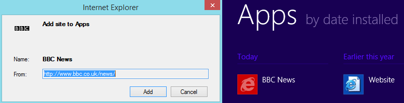
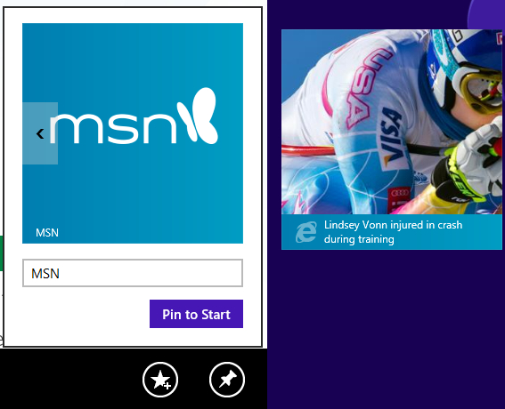

This document provides an overview of how web applications have started
to be integrated into native application environments, and outlines the
use cases and requirements for a standard that could allow users to
"install" web applications. The use cases and requirements were
gathered by examining the landscape of proprietary solutions, and,
where possible, by gathering statistics about the prevalence and usage
patterns of particular solutions used in the wild.
Proprietary solutions that integrate web applications into the
underlying operating system have been used in the wild for a few years
now, so consolidation towards a standardized solution could potentially
benefit users, developers, and browser vendors.
This document is undergoing heavy revision and changing on an almost
daily basis. If you have any thoughts or comments about the content,
please either join the public-webmob
mailing list or file a
bug on GitHub. All contributions welcome.
Introduction
To launch native applications on either a desktop-class machine or a
mobile device, users are generally presented with icons and
corresponding labels that represent the applications installed on their
system. Having the icons of web applications appear amongst
applications that the user considers native (e.g., those on the home
screen of a device) gives the perception to users that a web
application has been "installed" - even if the processes that go into
actually "installing" a web application differ from those of a native
application.
Some application icons of Android 4.3, Windows Phone 7, and Mac OS
Mavericks.
At the time of writing, the web platform lacks a standardized means for
a web application to indicate that it can be "installed" and treated as
if it were an native application. As this document will show, the web
platform also lacks sufficient metadata for a Web application to be
successfully integrated into an operating system in the same way native
applications are (i.e., not just on the homescreen, but integration
into other contexts such as the task switcher, privacy and security
settings, etc.).
Because of this gap in the web platform, browser vendors, including
Google, Apple, Microsoft, and Mozilla, have implemented proprietary
solutions that allow users to add web applications to the homescreen.
To get a web application to more fully integrate with the OS,
developers are sometimes required to use proprietary opt-in mechanisms,
which we discuss later, to indicate to the browser that the web
application can potentially work as a stand-alone application once it's
added to the homescreen. These opt-in mechanisms primarily provide the
OS with metadata (e.g., the icons and name of the application) so when
the web application is added to the homescreen, it appears
indistinguishable from an application that was natively installed.
Bookmarking
To access a web application, users traditionally opened up a web
browser, typed a URL or a search query into a search box, and had the
browser navigate to the web application they wanted. Alternatively, a
user may have "bookmarked" within a Web browser a set of web documents
or web applications they commonly access.
More recently, browsers have started to monitor user's browsing habits
to intelligently deduce which are the most common web sites the user
likes to visit (i.e., a type of automatic bookmarking). The browser
will then present visual links to those sites. Depending on the
browser, user-defined and automatically-gleaned bookmarks will appear
as a list of document titles or file names in either a drop-down menu,
"speed-dial"
entries, a toolbar, and/or a dedicated application window or tab. All
these bookmark types are illustrated below.
In a desktop-based browser, there are at least six different ways to
access bookmarks. Some of those bookmarks are derived dynamically by
monitoring user's browsing habits, such as the most visited sites and
"speed
dial" entries the user sees when they open a new tab.
Bookmarking on mobile browsers
On mobile devices, the interaction model has traditionally been the
same as the one described above: historically, there's been a clear
distinction between opening a native application and accessing a web
application. That is, to access a Web application a user needs to
first locate the Web browser they want to use, launch it, and then
either type-in a URL or select a bookmark. Web browsers on mobile
operating systems have thus added similar bookmarking facilities as
those found in desktop-class browsers. This is shown below.
The bookmarking facilities of mobile browsers closely resemble
those of desktop-browsers - providing both a traditional list of
bookmarks as well as a "speed dial" that can contain either
automatically gleaned bookmarks or user-configured ones.
The bookmarking facilities of mobile browsers helps reduce some of
the burden of typing URLs. Particularly for sites that the user
visits regularly, it means that a web site can be accessed by a
single press. Additionally, bookmarking facilities help separate
native applications from web sites the user needs to access for other
reasons (e.g., a particular wiki page on an intranet, a document with
commonly required information, etc.).
The following table shows some examples of how a user bookmarks a
page on a mobile browser. Both iOS and Android provide the user with
the ability to customize the name of the bookmark, as well as
organize the bookmark by placing it into a particular location.
Firefox OS, however, simply let's the user "star" a page - this gives
the user the option to bookmark the page. Once bookmarked, the site
is added to a bookmarks tab (not shown below), which, unlike other
mobile browsers, does not provide a means to manipulate the metadata
of the bookmark.
Bookmarking a page on a mobile browser
iOS Safari
Android Default Browser
Firefox OS 1.1
Side-effects of bookmarking: multiple home screens
Because basic bookmarks contain links to a range of different types
of resources, the bookmarking facilities of desktop and mobile
browsers do not integrate into an operating system's application
menu. This means that web applications and "native" applications are
treated as different things. This separation makes sense for many
kinds of web sites (e.g., static, informational websites that provide
little other functionality), but there is a range of applications
that can provide an experience that is analogous to that provided by
an application installed locally on a user's device (e.g., a game, an
office productivity suite, a news or social networking site, a
currency converter or photo manipulation utility, etc.). That said,
it is users who are in the best position to decide what they consider
an "app" and where they would like to access it from (either as a
bookmark or as one of their locally installed applications).
As shown below, this desire to treat websites as applications has led
at least one browser maker to attempt to replicate the homescreen
experience directly in the browser itself.
In iOS 7's Safari web browser, the default tab view presents icons
derived from websites to create what is, in effect, a second
homescreen - image on the left. This can be clearly seen when
contrasted with the actual iOS 7 homescreen -image on the right.
Google Chrome's browser, although not shown here, does the same
thing in iOS: it presents bookmarked pages as a grid of icons.
Although this is a convenient way to access web sites, there are web
applications that would benefit users if they were directly available
from where the user normally accesses their installed applications.
Also relegating web applications to this second homescreen means that
web applications are treated as "second-class citizens": in the sense
that in order to access these applications, a user must first launch
the correct browser (from potentially a range of different browsers),
and then press the icon for the application they wish to load.
Key components of bookmarking
From the discussion above, we can conclude that the key bits of
information that are needed to enable bookmarking are:
Name (label or title):
Generally this will be the title of the page being bookmarked.
Mobile browsers usually allow users to change this, specially when
bookmarking to the homescreen.
Icon:
Generally, the site's favicon. However, proprietary solutions exist
that allow the browser to select from a range of icons.
URL:
The URL to be loaded when the user activates the bookmark.
Organization:
Browsers generally provide some facility to allow bookmarks to be
organized (e.g., into folders).
Add to homescreen
Ideally, web applications should be immediately available to users
without them needing to launch a separate application (a web browser)
and having to type a URL. A user may have found a web application
through browsing the web (e.g., through a search engine, via a link
given to them by a friend on a social network, or through a website
that works as an "app store"), but once added to the homescreen, the
developer needs to be able to control if in web application opens in a
Web browser environment or if the application is launched
standalone: that is, once the application is launched, it
appears indistinguishable from a native application by allowing the OS
to treat it as equivalent to a native application. This includes, but
is not limited to, integration with OS facilities such as the task
switcher and doing away with browser UI chrome (the address bar,
forward/back buttons, etc.).
Some browser makers have long acknowledged this as something developers
want and that users could benefit from: iOS's Safari has had the
capability to add a website to the homescreen since early 2008 (as of
version 1.1.3, as shown in the figure below); the Android's stock
browser has provided the capability to "add to homescreen" since at
least 2009. Windows 8 also provides a similar capability, called
"pinning", which we discuss in more detail below.
iOS's Safari has almost always provided a way for users to add
websites to the home screen of the device. Once the user presses
"add", the icon for the Web application is placed along side other
native application icons.
The ability to add a web site to the homescreen didn't automatically
make a web application look, feel, or integrate into the operating
system in the same way as native applications did. For instance,
originally in iOS, launching a web application that had been added to
the homescreen took the user back into Safari; in other words, it
worked just like a traditional bookmark. It was only with the release
of iOS 2.2 in September 2008 that applications that had been added to
the home screen gained the capability to be displayed full screen
(i.e., doing away with Safari's application chrome, as shown below).
Apple did this by introducing a proprietary bit of HTML which
developers could make use of if they so chose to. The result of using
this proprietary switch is shown below.
A side-by-side comparison of Variety's web application
running in Safari next to the same application once added to the
homescreen, on the left and right respectively. Variety's web
application makes use of Apple's proprietary switch so to make sure
that once it's launched from iOS's homescreen the application
integrates with the OS. As seen on the right, this means that browser
chrome, including the navigation buttons, ability to bookmark, and
the URL and search bar, have all been removed by iOS.
Windows 8 also provides similar capabilities, but in two different
forms: one allows a user to "Add site to Apps", meaning that a shortcut
icon to a web application is added amongst natively installed
applications. This is shown below.

In Windows 8, "adding a site to apps" makes a website appear amogst
other apps. Once added, the launch icon is treated identically from
other applications. Once clicked, the web application is opened in
Internet Explorer.
The second type of bookmarking supported by Internet Explorer is
pinning: this adds the site as a "live tile" to the homescreen. To best
support this functionality, the developer needs to include some
proprietary metadata for the icons and for how often the tile should be
updated. The site is not actually presented in the live tile, but an
RSS feed is used instead.

On the left, the facility that allows a site to be "pinned" to the
Windows 8 homescreen. On the right, the result of pinning a site is
shown. Note that the content shown in the tile comes from an RSS
feed, and not from the HTML of the site itself.
What initially started as a way to add a link to the homescreen has
incrementally evolved to diminish the functional differences between a
web application and a native application. This has not happened on the
OS level alone: progress on the web platform, such as the ability to
make content available off-line, performance gains through hardware
acceleration, and integration with native form controls, has assisted
in diminishing these differences.
But it should be noted that being able to have bookmarks outside the
web browser is not something particularly new or noble. Desktop
browsers have had that capability for possibly over a decade. However,
giving developers the choice to tightly integrate their web
applications into the OS directly from the Web browser is still
somewhat new (hence all the proprietary switches and fragmentation in
this space). This is different from packaged applications (zipped-up
HTML applications) or hybrid application (applications that are
distributed as native applications, but rely on a Webview), in that
they applications are "installed" directly from the browser itself
rather than from an app store.
Examples of add to homescreen on mobile browsers
iOS 7's Safari
Android's Stock browser
Firefox OS 1.1
Key components of the "standalone" web application
Web Applications that opt-into being run standalone have somewhat
different requirements to web applications a user has bookmarked to
the homescreen. This is because OS level facilities of interacting
with and controlling native applications are different from those of
a web browsers.
In order for a web application to be "installed" in such a way that
it provides a user experience that is indistinguishable from that of
a native application, a number of key things are needed. This list
compliments the list of things needed for bookmarking:
Standalone switch:
If a developer feels that their web application is analogous to a
native application (e.g., it works offline, doesn't need a
navigation bar, etc.), then they use some kind of switch (e.g.,
through markup) to indicate this to the OS when the application is
added to the homescreen. Otherwise, the installed web application
is treated as a regular bookmark and launched in the appropriate
browser.
Name:
The ability for a user to find an application through its name.
Some OSs allow native applications to be found by using multiple
names.
Icons:
Generally a small graphic that functions as an application's unique
visual identifier amongst a list of installed applications. An
application's icon can also be used in other contexts such a
settings screen, dialogs, notifications and other menus. Because of
the various contexts that a application's icon can appear in an OS,
applications typically need to provide a range of icons at
different sizes and, more recently, specifically targeted at
different device pixel densities.
Orientation:
Applications, such as games, require that they be started in a
particular orientation to function effectively.
Self awareness:
The application is aware through script that it was launched
"standalone", rather than in the context of a Web browser. This
differs from native applications, which always run stand alone.
Start page:
As a web application can be added to the homescreen at any point
the user desires.
Security:
Different cookie jar. Is it blank slate? are cookies copied over?
webSQL data?
Privacy:
In web browsers, user's are generally able to control privacy
settings for a particular website through "site preferences" or
through the browser's settings. When a web application is taken out
of the browser context, it needs to either integrate with the
privacy settings at the OS level or some other intermidiary
application needs to provide this capability.
Navigation:
Applications are generaly composed of one ore more panes, which
together provide the capabilities of the application. Users
generally navigate around different panes depending on what they
are trying to achieve. Web applications, on the othe hand,
generally rely on hyperlinking from one document to another.
UI behavior:
Unlike web pages, applications generally don't allow user's to
select ever span of text on the page.
Indication that the application can work standalone
As already discussed, web applications can be added to the homescreen
of a device in such a manner that they behave just like bookmarks. That
is, once added to the homescreen, when the icon of the web application
is activated, a web browser is launched and the desired web page is
loaded.
However, through various proprietary opt-in mechanisms, developers are
able to inform the browser that the application is able to work
"standalone": that is, it is able to function without the user
interface chrome of a browser - which typically means an web
application will be launched in full screen. Depending on the OS and
browser, these opt-in mechanisms can have various side-effects. One
such web application, Forecast.io, is
shown below running in iOS.
The figure shows how the Forecast.io web application
integrates with iOS 7's task switcher. Note also the web
application's launch icon is indistinguishable from those of other
applications.
iOS7 Safari
In iOS, then means by which an application developer indicates that
their application can be run "standalone" is by using a meta element
that takes the following form:
By declaring the above in a document, iOS will launch an application
that has been added to the home page in fullscreen (without any
browser chrome).
If the meta tag is omitted, and a user adds a page to the home
screen, then the web application simply opens in a tab within Safari.
TODO: Discuss that a side effect is the following practice, which can
range from the annoying to the just bad and requires browser sniffing
(so you know where to point the "add to home screen" arrow, which is
different on every browser). Having an API might help with this
problem, but allowing developers to be a bit more descrete about
adding to homescreen.
The figure shows web applications that asks the end-user to add the
web application to the homescreen. On the left forecast.io and ESPN on the right.
Chrome beta for Android
Google Chrome Beta for Android reuses Apple's convention of using a
meta tag whose name is "apple-mobile-web-app-capable".
It also introduces it's own value
"mobile-web-app-capable".
By declaring the above in a document, Chrome will launch an
application that has been added to the home page in fullscreen
(without any browser chrome).
If the meta element is missing, then the site is
launched as a tab within Chrome.
Firefox OS
Firefox OS lacks a way to declaratively indicate to the Web browser
that the application can run standalone when lunched. Instead,
Firefox OS relies on an API to provide this functionality. The
mozApps.install() method takes a url to a JSON file as
an argument. The JSON file supplies Firefox OS with the relevant
metadata (e.g., application's name, URLs for the icons, etc.) needed
to make installation possible.
navigator.mozApps.install(pathToManifest);
Icons
...
Security and privacy
The act of adding an application to the home screen serves as a cue to
alter the security policy of an application. For example, in iOS, and
application that has been added to the home screen will no longer share
cookies, localStorage, IDB, etc. with the Safari Web browser. The OS will
also reset all its API permissions, so, for example, any previously
granted permission to access location services that occurred in the
browser are forgotten once the application is added to the homescreen -
the end-user will need to re-enable such permission again after the
application is launched from the homescreen.
Furthermore, by adding the application to the home screen, the
application gains its own independent privacy settings in iOS's privacy
menus. This is shown in the figure below.
iOS privacy settings for location services. Shown is Forecast, which is
an installed web application as well as the Safari Web browser. Here,
users can disable the . More importantly, disabling location services
for the Web browser does not affect the ability of Forecast to access
location services.
Start page
A user can add a web application to the home screen from anywhere
within a website (e.g., while reading a document). Returning to that
same document when the application starts back up might not be ideally
what either the user or developer want.
MS related info:
http://msdn.microsoft.com/en-us/library/ie/gg491732(v=vs.85).aspx
Orientation
An application's orientation can be unlocked, meaning that the layout
of the application can adapt to portrait or landscape, or can be locked
to either portrait, landscape. Portrait or landscape can be further
constrained to being flippable or not. Flippable means that if the
device is rotated 180 degrees, the display is also flipped. Otherwise,
the orientation remains locked.
Proprietary solutions - Firefox OS allows applications to be locked to
particular orientation through their manifest format
Navigation
The ability to navigate documents by activating hyperlinks is a
fundamental aspect of the Web platform. It's what makes the web, the
web. However, when applications are added to the homescreen of a
device, and indicate that they are able to function standalone, the
navigational behavior has some side effects. These side effects
generally emerge because the applications are launched in full screen
and devoid of any browser chrome, and so the are no visual indicators
for the user to get a sense of where they are (as they normally would
with an address bar). As such, different browsers deals with this
problem in different ways.
Android - Chrome beta
Chrome allows users to freely navigate web documents by following
hyperlinks: this works both same origin and across origins. However,
if a user navigates away from the origin from which the application
was installed, a small bar with the new origin to be shown. This
appears to be done as a security precaution to give the user a better
sense of where they are (specially if they have unexpectedly been
navigated to another domain).
Windows 8 - IE 11
In Windows 8, launching web applications that have been "added to
Apps" simply open again in IE.
iOS7 Safari
On iOS, once an application is added to the homescreen,
hyperlink-based navigation from one document to another is no longer
possible by default: this is because in iOS, the "default behavior"
of activating a link is to open the link in Safari (note however,
navigating within the document itself via fragment identifiers is
still possible). The default behavior can be prevented by capturing
all click events generated by HTML a elements. Once an
event has been captured, and prevented from performing the default
action, then the window.location can be manually set by
script. Preventing the default behavior and manually handling the
navigation is illustrated by the code below.
document.addEventListener("click", function (e) {
var elem = e.target;
if (elem.tagName && elem.tagName === "A") {
e.preventDefault();
location.href = elem.href;
}
});
Once click events are captured and the default behavior prevented, it
becomes possible not only to navigate a document within the same
origin, but also to other origins. However, every document will need
to include code similar to the one above in order for navigation via
hyperlinks to continue to work.
Firefox OS
...
Requirements
A standardized solution:
MUST provide a mechanism that allows a developer to indicate that
the application is able to function as standalone. If no such
indication is given by the developer, then the application MUST launch
in the Web browser as normal. That is, the solution MUST NOT conflate
bookmarking with allowing a web application to be launched as
standalone.
MUST provide a mechanism for the application to check (e.g., via
script) if it's running as a standalone application.
MAY provide a mechanism for the developer to interrogate the
browser about what UI chrome is available (e.g., is there a navigation
bar?).
MUST provide a means to include a name for the web application.
This name is not the same as the document's title, though the document
title could serve as the name if the name is missing.
SHOULD provide a means to support a short name for the application.
MUST specify the default navigation behavior for a standalone
application.
MUST clarify the security model with regards to how permissions and
data are shared with the web browser from which the web application was
bookmarked or installed. This could possibly allow the developer to
opt-into (or out of) sharing cookies, storage data, etc. with the
browser that installed the application.
MUST provide a means to declare multiple iconic representations
suitable for a range of contexts. In addition, the solution SHOULD
allow developers to declare the dimensions, format, as well as a means
to indicate the preferred device-pixel-ratio at which each icon should
be used.
MUST provide a means to declare the orientation that the
application needs to be in when launched. The solution MUST allow the
application to fully lock to a particular orientation, or allow a
soft-lock to a particular orientation: meaning that if the user flips
the device 180 degrees, the document is also flipped.
MUST provide a means that allows the developer to declare the URL
that will be opened when the application is launched. This URL
overrides the URL from which the document was added to the homescreen.
SHOULD standardize an API for adding web applications to the
homescreen.